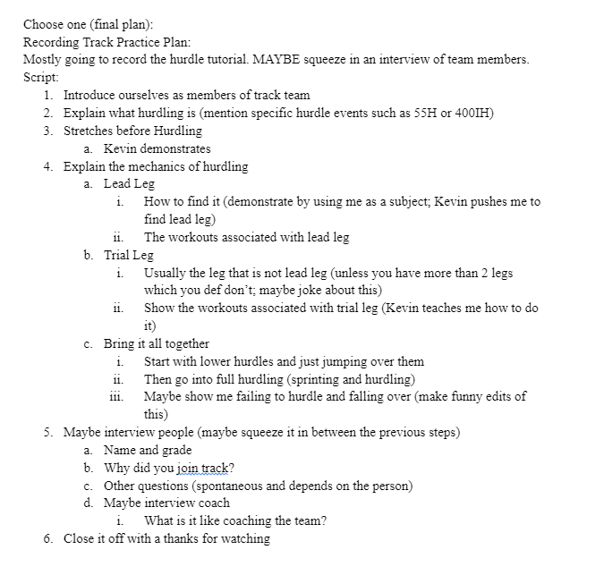

# Reflections
Reflection! Reflect, reflect, no tagbacks!
# Prompt 1
Discuss a piece that demonstrates teamwork. How did a classmate help you to maximize this piece? How did you accept revision suggestions?
I think I collaborated with Sooah on the Video Project really well. Though we were not able to record footage over break or during days where it rained heavily, I think in every other respect our planning was careful and detailed. Here you can see our pre-assignment for the video. The final result is pretty close to what we had originally planned, minus the interviewing.
Sooah's sister (Jinah!) recorded the footage for us. Once we cleaned up the clips, the final video was put together by Sooah and transcribed by me. I'm pretty proud of how it came out. In the pre-assignment stage Mr. Weinstein suggested that we "add a woman to the show" in order to show how their hurdle form may differ. To this end, we asked Sarah F to join us for stretching, and other track members with varying levels of experience to join us.
# Prompt 2
Explore what you have learned about writing, reading, or some other related field.
Though I mainly learned this in the context of programming, I discovered it's better to write something than to obsess over perfection and write nothing. This is especially important for large projects where getting external feedback is essential to fine tuning the end result. This becomes apparent very quickly in game design. Many of my previous projects stagnated out of a fear of "not getting it quite right", which has led to a bunch of partially developed ideas, but nothing to show for it.
Maybe it's easier as a beginner to not fear making mistakes? In Creative Writing, I felt that the relaxed nature of the class made me feel comfortable with mistakes. That, along with the policy of accepting resubmissions for full credit has given me the confidence to create quickly.